At the year's midpoint, a look at the trends reshaping how India parties — and what comes next.
9 July 2026 · IndiaA quieter season is a building season. A look at what we're cooking up for the second half of 2026.
8 July 2026 · UdaipurThe biggest night of the year sells out months ahead. Why July is the right time to lock your NYE plans.
7 July 2026 · IndiaThe monsoon won't last. Here's the festival season building on the horizon — and what to start planning now.
6 July 2026 · IndiaMumbai to Bengaluru to Delhi — a city-by-city look at where to be on a rainy July weekend.
6 July 2026 · IndiaGreen hills, full lakes and low crowds — the case for a monsoon Udaipur getaway (with the parties to match).
5 July 2026 · UdaipurWhere India's scene stands at the year's midpoint — and the events worth watching as the calendar reopens.
4 July 2026 · IndiaRain doesn't cancel the party — it just moves it. A guide to India's best wet-season nightlife.
3 July 2026 · IndiaGoa beaches to Rajasthan lakes to metro rooftops — where the country throws its biggest NYE celebrations.
2 July 2026 · IndiaMid-monsoon means indoor magic and smart planning. Your guide to going out in July across the country.
1 July 2026 · IndiaRain reshapes the calendar. How India's nightlife adapts when the outdoor season pauses.
27 June 2026 · IndiaWhen the club closes, the real night begins. An ode to afterparty culture and the people who never go home.
21 June 2026 · IndiaThe most underrated part of any party isn't the DJ — it's the rig. An appreciation of sound-system culture.
15 June 2026 · IndiaArtist fees, venue costs, bar margins and ticket math — a look under the hood of how a party makes (or loses) money.
7 June 2026 · IndiaAs the plains bake, India's crowd escapes upward — Himalayan raves, hill-station weekends and cool-climate festivals.
29 May 2026 · IndiaThe best nights aren't only in Mumbai and Delhi anymore. How smaller cities are building world-class party scenes.
27 May 2026 · IndiaDiscovery, hype, FOMO and the guest list — social media has transformed nightlife. A look at the double-edged shift.
15 May 2026 · IndiaStop missing the good nights. A practical guide to discovering the parties worth your time.
9 May 2026 · IndiaOutdoor overnight parties are magic — if you pack right. The complete checklist for a camping music event.
3 May 2026 · IndiaWith summer arriving, India's nightlife moves toward the water — and the daytime party becomes king.
28 April 2026 · IndiaFrom Goa's beaches to Rajasthan's lakes, India's parties are pulling travellers. Inside the rise of nightlife tourism.
25 April 2026 · IndiaA destination party weekend is the ultimate group trip. Here's how to plan one without the chaos.
19 April 2026 · IndiaDaytime, water, sunshine and music — the pool party's rise is one of the defining trends of Indian nightlife.
15 April 2026 · IndiaGolden light, easy music and a drink in hand — how the sunset session became a nightlife staple.
11 April 2026 · IndiaSun, water and hours of dancing is a different discipline. Your checklist for surviving (and enjoying) a pool party.
5 April 2026 · IndiaThe single biggest party moment on India's calendar — colour, water and music from Delhi to Udaipur to Goa.
25 March 2026 · IndiaPart festival, part food carnival, all family-friendly fun. A guide to the multi-city Zomaland experience.
19 March 2026 · IndiaOur headline Holi pool party returned bigger — organic gulal, rain dance, and a dancefloor that spilled into the water.
18 March 2026 · UdaipurThe party that refuses to end has a special magic. An ode to India's after-hours and sunrise culture.
15 March 2026 · IndiaHeadliners get the posters, but residents build the sound of a venue. An appreciation of the DJ who plays every week.
13 March 2026 · IndiaBefore Rangilo Rajasthan there was Rang-e-Udaipur — the daytime colour party that proved the format works lakeside.
11 March 2026 · UdaipurA multi-city institution built on indie, rock and eclectic line-ups. A guide to the beloved NH7 Weekender.
11 March 2026 · IndiaWhere to throw colour to the best soundtrack — a rundown of India's biggest and best Holi celebrations.
9 March 2026 · IndiaA quick guide to the two ways electronic music reaches a stage — and what to expect from each.
7 March 2026 · IndiaGroovy, warm and impossible to stand still to — why disco-flavoured house is winning Indian dancefloors.
5 March 2026 · India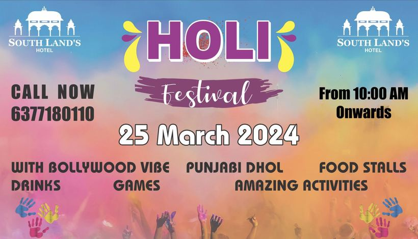
A Holi festival edition at Southland's — proof the Pronite colour party travels beyond the lakeside.
4 March 2026 · UdaipurFrom Chandigarh to Canada to the world charts — how Punjabi music became India's default party sound.
3 March 2026 · IndiaA remote desert festival built on adventure, camping and eclectic sound. For the party-goer who wants to escape.
1 March 2026 · RajasthanPune takes over, the blues and jazz crowd gets its moment, and the electronic calendar heats up nationwide.
28 February 2026 · India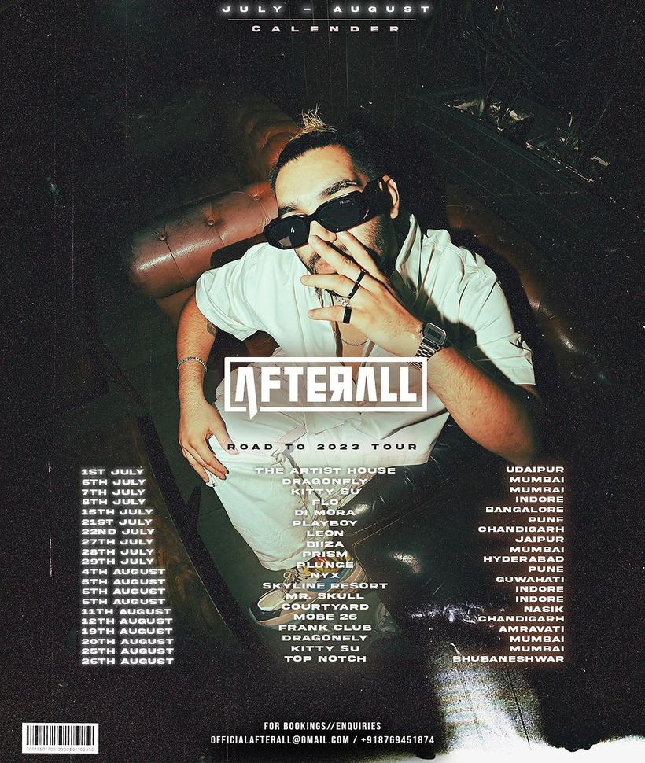
When a touring music brand routes through your city, it means the scene has arrived — and Udaipur showed up.
27 February 2026 · UdaipurNot every great night is a rave. A guide to the live, soulful and fusion events that fill India's other dancefloor.
27 February 2026 · IndiaSustainability meets serious music near Bengaluru. A guide to the eco-conscious festival with a devoted following.
25 February 2026 · BengaluruCyber Hub, high-rise clubs and big-room energy — a guide to the satellite city that hosts the capital's biggest nights.
25 February 2026 · Gurugram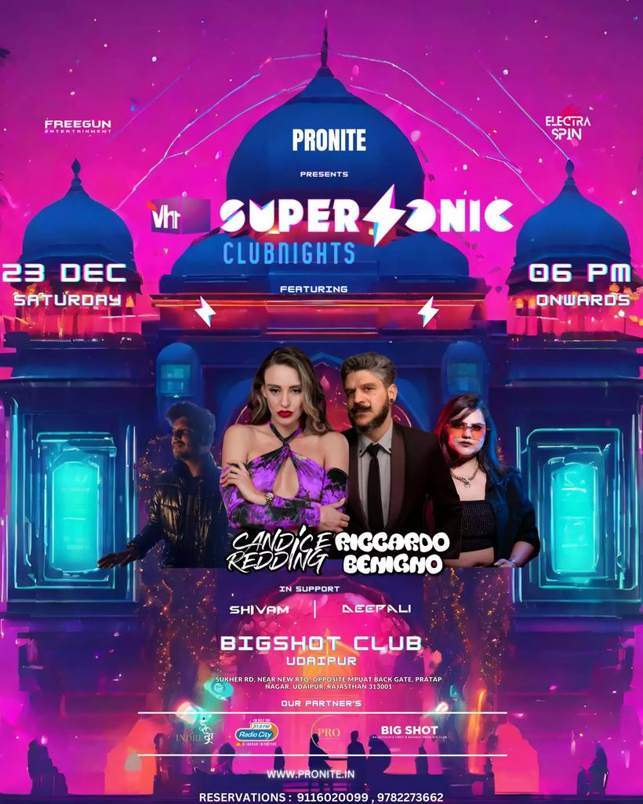
Our collaboration with one of India's biggest festival brands — what it meant and what we brought to it.
24 February 2026 · PuneIndia's rap explosion changed the sound of a generation. A guide to the scene reshaping the country's nightlife.
23 February 2026 · IndiaChennai plays it cooler than the party metros, but its clubs, gigs and beach energy reward those who look.
21 February 2026 · ChennaiHow the microbrewery boom quietly became one of India's most important live-music platforms.
21 February 2026 · IndiaCinematic, euphoric and deeply popular in India — why melodic techno bridges the head and the heart.
19 February 2026 · India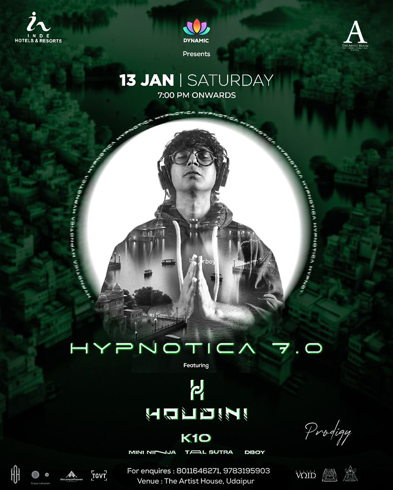
A series that's become a Udaipur institution — the seventh edition proved why Hypnotica keeps selling out.
18 February 2026 · UdaipurThe City of Joy parties with soul. A guide to Kolkata's legendary live scene and its clubs.
17 February 2026 · KolkataGreat party photos are an art. How to capture the night beautifully — and when to put the phone away.
17 February 2026 · IndiaHeavier, faster and more aggressive — a guide to India's committed bass-music underground.
15 February 2026 · IndiaOur second take on the camping format — proof that the getaway party is becoming a Pronite signature.
14 February 2026 · UdaipurClean, planned and surprisingly lively — Chandigarh's Sector clubs and Punjabi energy make for a big night out.
13 February 2026 · ChandigarhAsia's biggest blues festival brings legends to Mumbai every February. A guide for the roots-music faithful.
13 February 2026 · Mumbai
A back-to-back journey through rolling techno and melodic afro house that showed just how deep Udaipur's underground goes.
11 February 2026 · UdaipurBollywood and big-room on one side, techno and house on the other. A guide to the divide — and why you need both.
11 February 2026 · IndiaRajasthan's capital blends heritage glamour with a growing club and event scene. Here's the lay of the land.
9 February 2026 · JaipurA great scene runs on respect. The simple, unspoken rules that keep a dancefloor magic for everyone.
9 February 2026 · India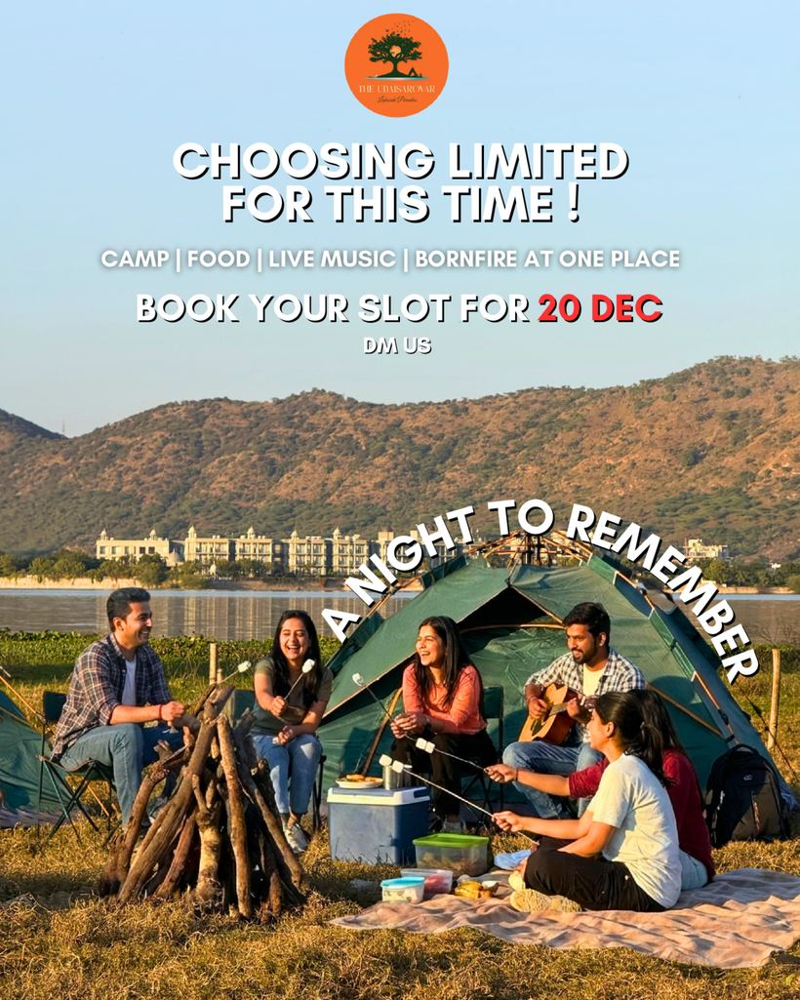
Tents, a bonfire, a sky full of stars and a dancefloor by the water — Pronite's camping night is a different kind of party.
7 February 2026 · UdaipurFestival main-stage EDM introduced a generation to dance music. Where it stands now, and what it built.
7 February 2026 · IndiaPune's marquee weekend spans techno to pop to bass. A guide to one of India's most-loved festivals.
6 February 2026 · PunePalaces, lakes and — increasingly — a proper party scene. Your guide to going out in Udaipur, Pronite's home turf.
5 February 2026 · UdaipurIndian weddings are among the world's great parties — and they've quietly transformed the events industry.
5 February 2026 · India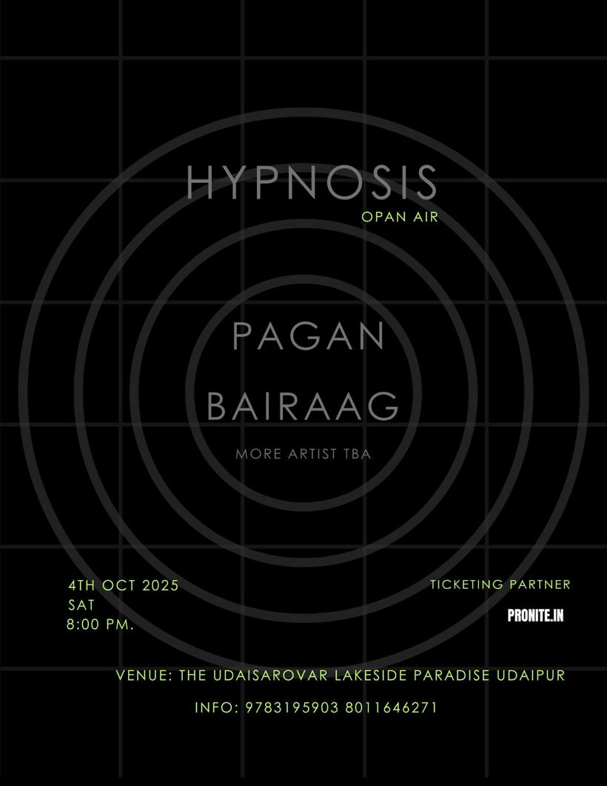
Open-air production, a hypnotic set and a crowd that came to lose track of time — Hypnosis did exactly what its name promised.
4 February 2026 · UdaipurNo genre fills a room in India like Bollywood. An appreciation of the singalong party that beats every import.
3 February 2026 · IndiaThe city's tech boom brought a nightlife boom with it. A guide to Hyderabad's clubs, rooftops and events.
1 February 2026 · HyderabadThe dancefloor was never really about the bar. A guide to going out — and going hard — completely sober.
1 February 2026 · IndiaThe post-NYE glow, Goa's peak season, and Mumbai's big festival weekend — how India partied to open the year.
31 January 2026 · IndiaElectronic music, art and a 17th-century fort under desert stars. Inside India's most atmospheric boutique festival.
30 January 2026 · Rajasthan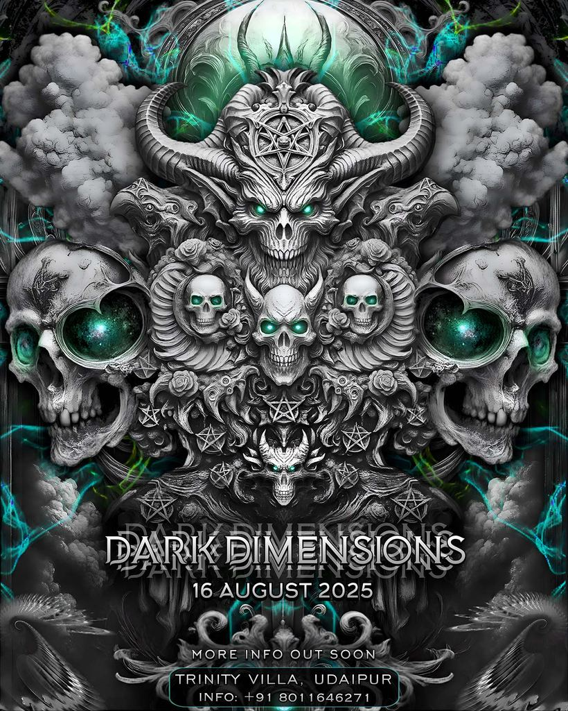
A night built for the peak-time techno crowd — harder, faster, and unapologetically underground.
29 January 2026 · UdaipurMulti-day festivals are a test of stamina. Pro tips to still be standing (and smiling) on the final night.
29 January 2026 · IndiaA student city with festival-grade ambitions — and the home of VH1 Supersonic. A guide to Pune's nightlife.
28 January 2026 · PuneRolling rice fields, pine hills and independent music — Ziro is India's most idyllic outdoor festival.
27 January 2026 · Arunachal PradeshThe unseen work that turns an empty venue into an unforgettable night. An appreciation of the people who build the party.
27 January 2026 · IndiaLong before EDM, the beaches of Goa birthed a global genre. The story of psytrance and its enduring Indian home.
26 January 2026 · IndiaA great night is a safe night. Practical, judgement-free advice for looking after yourself and your friends.
25 January 2026 · IndiaThe country's most discerning music crowd lives here. A guide to Bengaluru's clubs, microbreweries and deep-cut scene.
24 January 2026 · BengaluruFrom techno basements to lakeside pool parties, a practical guide to dressing right for every kind of night.
23 January 2026 · India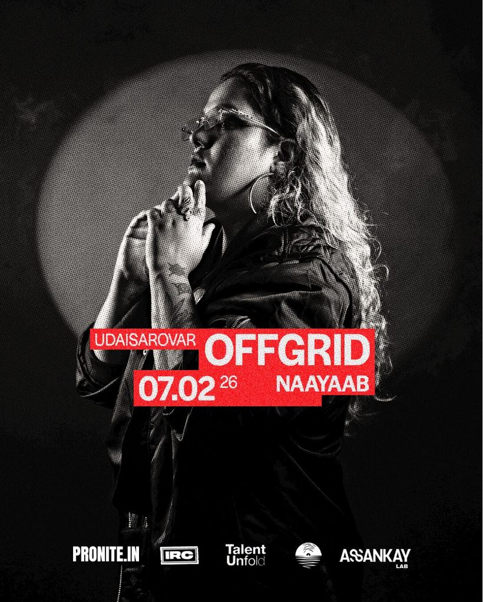
A pure underground night — no Bollywood, no requests, just long-form techno and afro house on the water's edge.
22 January 2026 · UdaipurA legendary international festival brand, reborn in Mumbai. What to expect from India's biggest multi-genre weekend.
22 January 2026 · MumbaiThe capital's scene is loud, ambitious and spread across a giant metro. Here's how to navigate a Delhi-NCR night.
20 January 2026 · Delhi NCRBehind every Pronite lakeside night is a venue built for it. A look at the home base — and why it changes what we can do.
19 January 2026 · UdaipurFrom the DJ booth to the promoter's desk, women are driving some of the most important work in Indian nightlife.
19 January 2026 · IndiaBefore techno, before EDM, there was house. A guide to the foundational sound of club culture — and its Indian life.
18 January 2026 · IndiaCover, guest list, tables, presale — a plain-English guide to getting into the party (and paying less).
17 January 2026 · IndiaThe city that never sleeps has the deepest club calendar in India. A guide to where the night actually happens.
16 January 2026 · Mumbai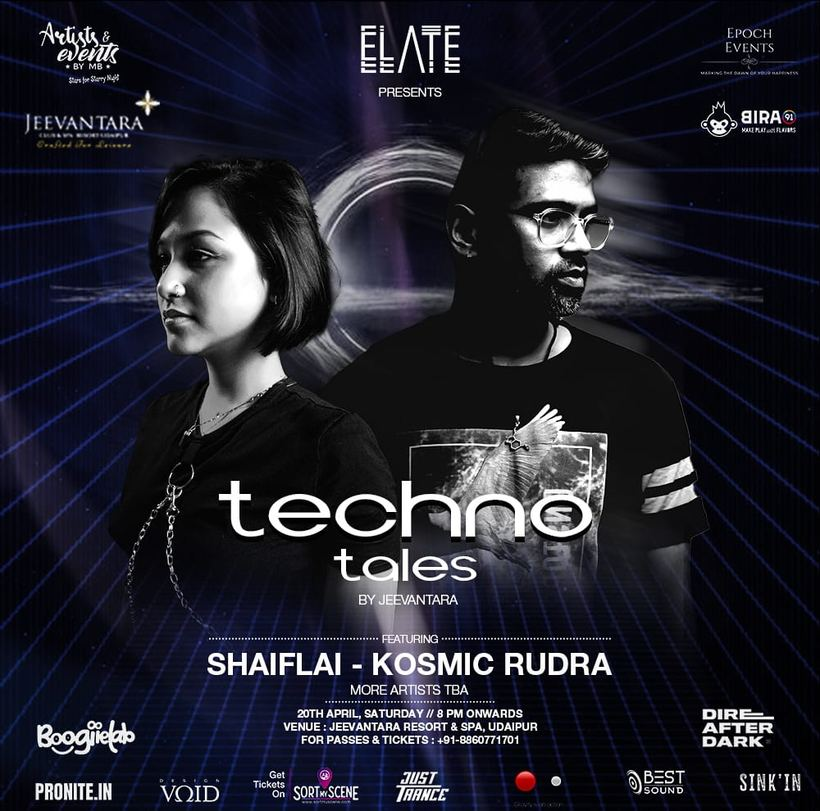
Less about drops, more about journey — Techno Tales treated the DJ set like a narrative from first track to last.
15 January 2026 · UdaipurHomegrown selectors and producers are now global names. The story of India's own dance-music talent.
15 January 2026 · IndiaMelodic, percussive and made for open air — why afro house has become the heartbeat of the Indian party scene.
14 January 2026 · IndiaMore cultural extravaganza than club night, Nagaland's Hornbill Festival is a bucket-list Indian experience.
13 January 2026 · NagalandIndia's party capital runs on a season, a sound and a set of unwritten rules. Here's how to actually do a Goa night.
12 January 2026 · GoaNervous about your first proper dance-music night? Here's everything you actually need to know.
11 January 2026 · IndiaTwo totally different Goas share one coastline. A guide to picking the right side for the night you want.
11 January 2026 · GoaRepetitive, hypnotic and built for the long haul — a beginner's guide to the sound powering India's underground.
10 January 2026 · IndiaIndia's flagship electronic festival is a rite of passage. What Sunburn is, and how to do it right.
9 January 2026 · Goa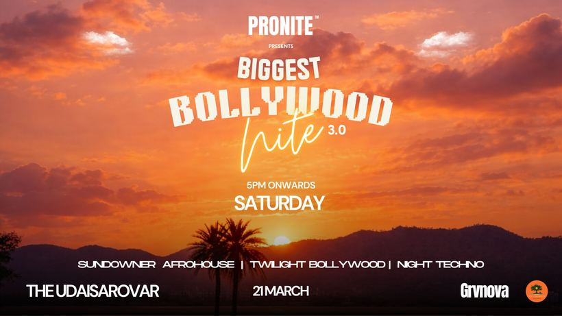
Our biggest Bollywood night yet turned The Udaisarovar into one giant singalong. Here's how the third edition went down.
8 January 2026 · UdaipurA luxury-resort New Year's Eve that matched Pronite's sound to a genuinely spectacular setting.
7 January 2026 · UdaipurFree entry, first dibs and no spam — here's exactly how our WhatsApp guest list works and why you want in.
7 January 2026 · UdaipurFrom Sunburn in December to Ziro in autumn — how India's festival season actually flows across the year.
6 January 2026 · IndiaAn all-white Christmas party that turned the season's biggest weekend into a full-on Pronite dancefloor.
5 January 2026 · UdaipurA festive-season celebration that brought the whole city together — a look back at the Udaipur Christmas Festival.
4 January 2026 · UdaipurBringing the Pronite New Year to a premium hotel ballroom — polished, packed, and perfectly timed to midnight.
3 January 2026 · Udaipur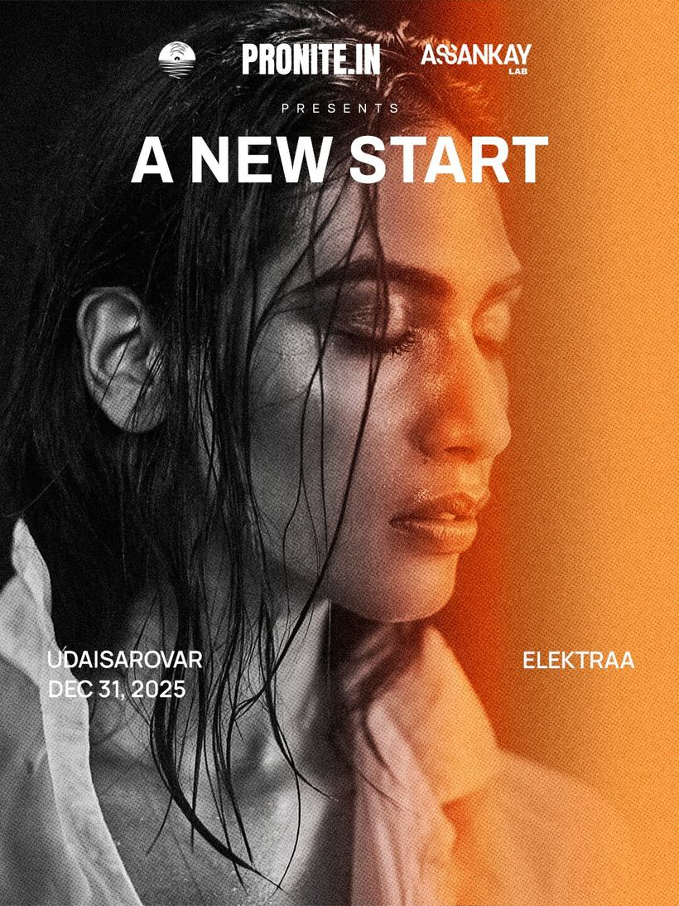
Our New Year's Eve flagship — a countdown on the water, a headline set, and the city's most-wanted guest list.
2 January 2026 · Udaipur